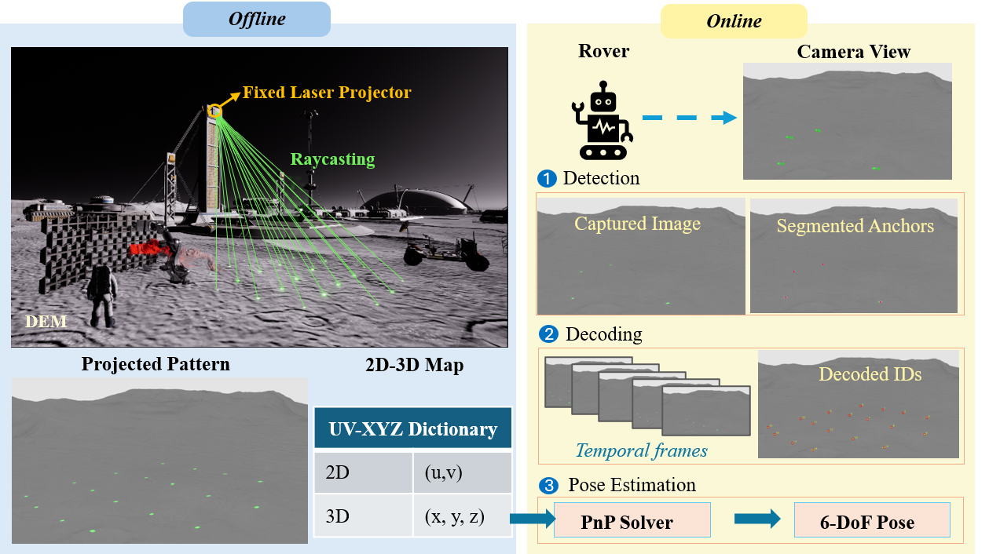

01 / THE PROBLEM & RATIONALE
The Problem
Robotic construction in extraterrestrial environments requires reliable localization without GNSS. Conventional odometry accumulates drift, while natural visual features and physically installed landmarks may be difficult to rely on across unstructured terrain.
Our Rationale
Rather than relying solely on existing landmarks, we actively create visual references by projecting coded fiducials onto the terrain. By registering these projected landmarks with a digital elevation model (DEM), we establish known 3D references for camera-based localization without physically placing markers at each location.
This browser cannot play the supplied animation. Open the animation.
02 / METHOD
Active Projected Landmark Localization
We develop a terrain-aware localization framework that integrates calibrated projection, digital terrain geometry, and camera-based pose estimation.
-
Project — Generate Visual Landmarks
A calibrated projector casts identifiable fiducial patterns onto the terrain, creating temporary visual references.
-
Register — Establish 3D Correspondences
Projector rays are intersected with a registered digital elevation model to determine the 3D positions of the projected landmarks.
-
Localize — Estimate Camera Pose
A camera detects and identifies the projected fiducials. Their 2D image observations and corresponding 3D positions are used to estimate camera pose through Perspective-n-Point (PnP).

03 / PERFORMANCE
Localization Performance
Simulation-Based Evaluation
- Mean translational error
- 3.0–5.2 mm
- Successful localization viewpoints
- 48/48
Effect of Terrain Geometry on Localization Accuracy
Using terrain geometry to determine projected landmark positions reduces localization error on curved terrain.
- BASELINE — Fitted local-plane
- 67.1 mm
- PROPOSED — DEM-raycast
- 4.8 mm
Physical Validation
- Valid pose estimates
- 18/18
- Differences relative to an AprilTag-based reference
- 4.4–10.2 mm
Research Implications
This research demonstrates the feasibility of creating terrain-registered visual landmarks for robotic localization without physically installing reference markers. The approach provides a foundation for future localization systems supporting robotic construction in GNSS-denied environments, including planetary surfaces.